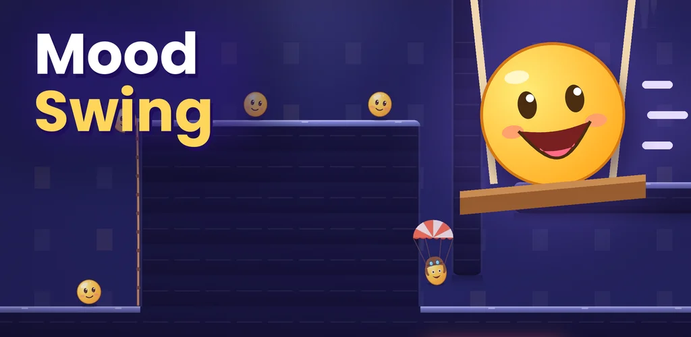
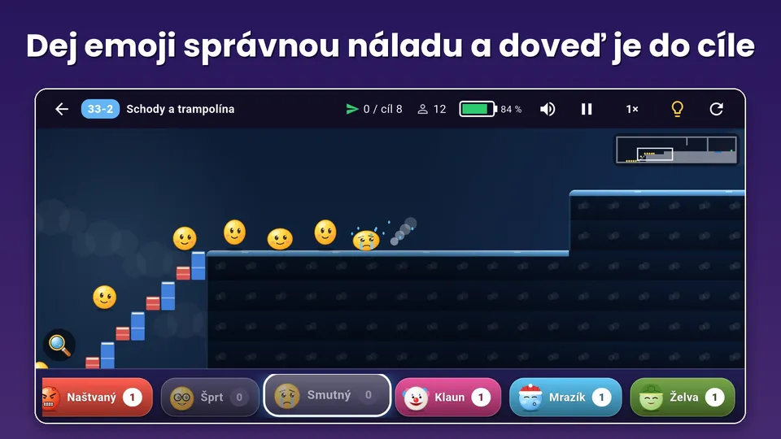
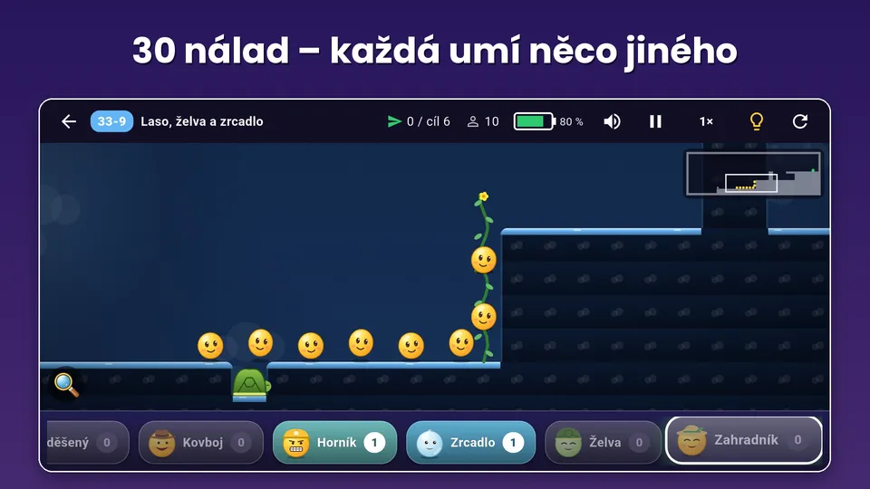
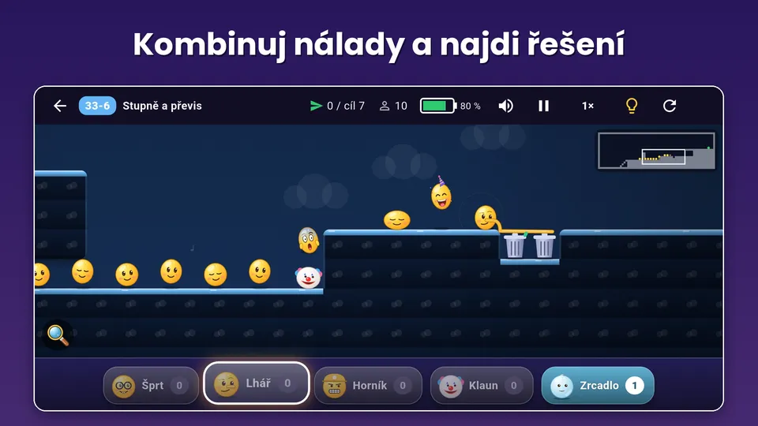
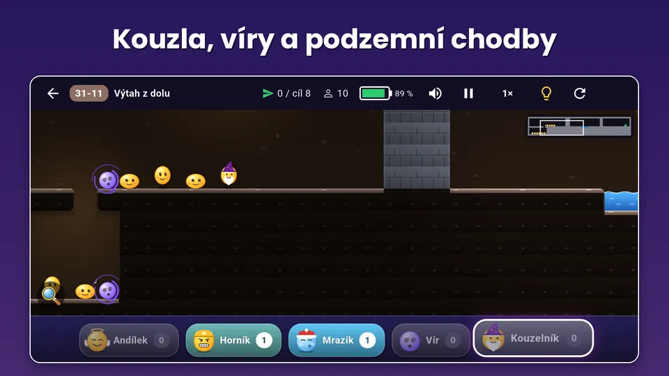
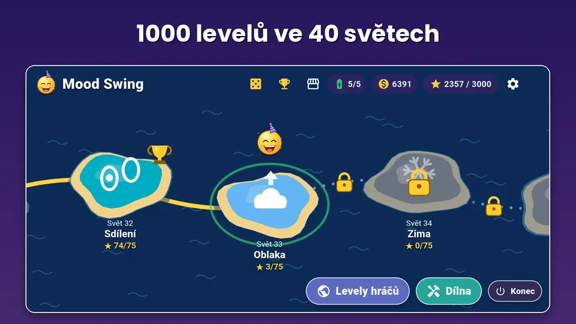
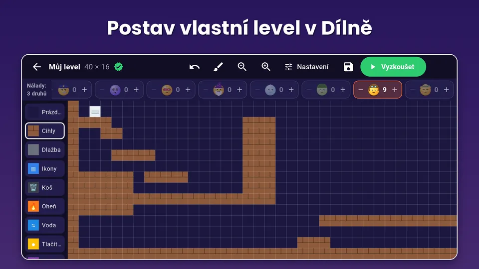
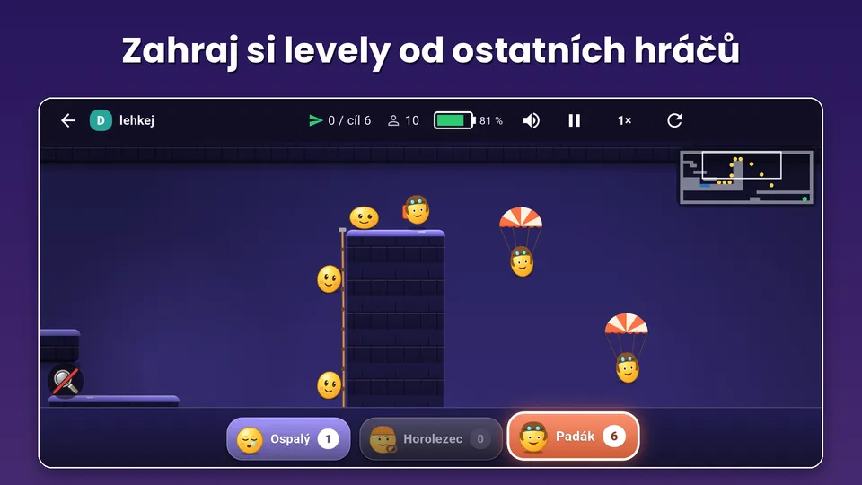
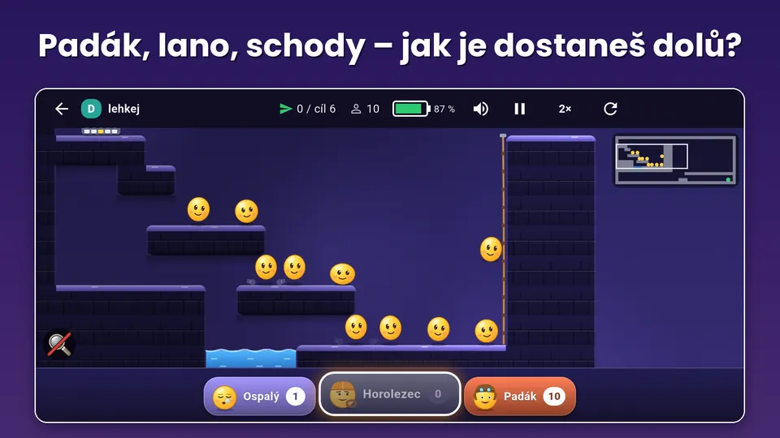

Mood Swing
Emoji utekla z klávesnice a bloudí po displeji. Dej jim správnou náladu ve správnou chvíli a doveď co nejvíc z nich do cíle. Pohodová logická hra bez stresu.
The emoji escaped from the keyboard and are wandering around the screen. Give them the right mood at the right moment and guide as many as you can to the goal. A relaxing puzzle game with no stress.
Stáhnout na Google PlayGet it on Google Play Jak se hrajeHow to playCo hra nabízí
What the game offers
30 nálad
30 moods
Smutný zaplní jámu slzami, Šprt postaví schody, Superhrdina přeletí propast, Zahradník vypěstuje popínavku… Každá nálada umí něco jiného.
Sad fills a pit with tears, Nerd builds stairs, Superhero flies over a gap, Gardener grows a vine… Every mood does something different.
1000 levelů ve 40 světech
1000 levels in 40 worlds
Od jednoduchých začátků po zapeklité hádanky, kde je potřeba nálady chytře kombinovat. Za každý level až tři hvězdičky.
From easy beginnings to tricky puzzles where you need to combine moods cleverly. Up to three stars for every level.
Dílna a Levely hráčů
Workshop and Player levels
Postav vlastní level v editoru, zveřejni ho a zahraj si levely ostatních hráčů ve stromu levelů.
Build your own level in the editor, publish it and play levels by other players in the level tree.
Žebříčky
Leaderboards
Denní, týdenní a celkové žebříčky hvězdiček. Ostatní vidí jen tvoji přezdívku.
Daily, weekly and all-time star leaderboards. Others only see your nickname.
Doplňky a kolo štěstí
Accessories and lucky wheel
Kup emoji za mince mašli, sluneční brýle, cylindr, korunu a další doplňky. Každý den jedno zatočení kolem štěstí zdarma.
Buy a bow, sunglasses, a top hat, a crown and other accessories for the emoji with coins. One free spin of the lucky wheel every day.
Záloha přes Google
Google backup
Hrát můžeš anonymně, nebo se dobrovolně přihlásit přes Google a mít postup zálohovaný i pro nový telefon.
Play anonymously or optionally sign in with Google to back up your progress for a new phone.
20 jazyků a offline
20 languages, offline
Hra je ve 20 jazycích a levely jde hrát i bez internetu.
The game is in 20 languages and levels can be played without internet.
Snímky obrazovky
Screenshots








Snímky jsou z české verze hry.
Screenshots are from the Czech version of the game.
Jak se hraje
How to play
1. Základy hry1. Basics
- Emoji vylézají z klávesnice jedno po druhém a jdou rovně, dokud nenarazí na zeď – pak se otočí. Bez pomoci skončí v koši, v ohni nebo ve vodě.
- Dole je lišta nálad. Ťukni na náladu a pak na emoji – emoji ji dostane a začne dělat, co ta nálada umí. Číslo u nálady říká, kolikrát ji v levelu můžeš použít.
- Nahoře vidíš, kolik emoji je v cíli a kolik jich je potřeba, a zbývající čas. Lupou si mapu přiblížíš nebo oddálíš, malá mapa vpravo ukazuje celý level.
- Každá nová nálada se při prvním setkání sama představí krátkou ukázkou.
- Když si nevíš rady, ťukni na žárovku – hra ukáže řešení po krocích (za mince nebo za reklamu).
- The emoji climb out of the keyboard one by one and walk straight until they hit a wall – then they turn around. Without help they end up in the bin, in fire or in water.
- At the bottom there is a bar of moods. Tap a mood and then an emoji – the emoji gets it and starts doing what the mood does. The number on the mood shows how many times you can use it in the level.
- At the top you see how many emoji reached the goal, how many are needed and the time left. Use the magnifier to zoom; the small map on the right shows the whole level.
- Every new mood introduces itself with a short demo the first time you meet it.
- If you are stuck, tap the light bulb – the game shows the solution step by step (for coins or a rewarded ad).
2. Hvězdičky, nabíječky a mince2. Stars, chargers and coins
- Hvězdičky: za každý level 1 až 3 podle toho, kolik emoji zachráníš. Hvězdičky otevírají další světy.
- Nabíječky: máš jich až 5. Start levelu stojí jednu, a když level vyhraješ, vrátí se ti. Prázdné se samy dobíjejí (jedna za 20 minut), další získáš za reklamu nebo za mince.
- Mince dostáváš za nové hvězdičky, z kola štěstí a za dobrovolné reklamy. Utratíš je za nálady navíc, nápovědy, nabíječky, doplňky pro emoji a další sloty v Dílně.
- Kolo štěstí můžeš jednou denně roztočit zdarma.
- Stars: 1 to 3 for every level, depending on how many emoji you save. Stars unlock new worlds.
- Chargers: you have up to 5. Starting a level costs one, and you get it back when you win. Empty ones recharge by themselves (one every 20 minutes); you can get more for a rewarded ad or for coins.
- Coins come from new stars, the lucky wheel and optional rewarded ads. Spend them on extra moods, hints, chargers, emoji accessories and extra Workshop slots.
- The lucky wheel can be spun for free once a day.
3. Dílna a Levely hráčů3. Workshop and Player levels
- Dílna a Levely hráčů se otevřou po dokončení světa 30 (tlačítka vpravo dole na mapě světů).
- V editoru nakreslíš mapu, vybereš nálady a nastavíš, kolik emoji je potřeba na hvězdičky. Než level zveřejníš, musíš ho sám dohrát na 3 hvězdičky.
- Zveřejnit můžeš až 5 levelů zdarma, další sloty koupíš za mince. Zveřejněný level můžeš kdykoli stáhnout.
- Hráči, kteří tvůj level dohrají, ho ohodnotí – a ty za dobré hodnocení dostaneš mince.
- Nevhodný level nahlásíš tlačítkem 🚩 Nahlásit level. Po několika nahlášeních se skryje všem.
- The Workshop and Player levels unlock after you finish world 30 (buttons at the bottom right of the world map).
- In the editor you draw the map, pick moods and set how many emoji are needed for the stars. Before publishing, you must beat the level yourself with 3 stars.
- You can publish up to 5 levels for free; more slots can be bought with coins. You can withdraw a published level at any time.
- Players who beat your level rate it – and you get coins for good ratings.
- Report an inappropriate level with 🚩 Report level. After several reports it is hidden for everyone.
4. Účet, záloha a jazyk4. Account, backup and language
- Při prvním spuštění si vybereš, jestli chceš hrát anonymně, nebo s účtem Google. Ostatní hráči vždy vidí jen tvoji přezdívku.
- S účtem Google se postup (hvězdičky, mince, doplňky, rozpracované levely) zálohuje a obnovíš ho po přeinstalaci nebo v novém telefonu. Účet můžeš připojit i později v Nastavení – postup se přenese.
- V Nastavení také změníš přezdívku a jazyk (20 jazyků), odhlásíš se, nebo smažeš účet a všechna data na serveru.
- On first launch you choose whether to play anonymously or with a Google account. Other players only ever see your nickname.
- With a Google account your progress (stars, coins, accessories, unfinished levels) is backed up and restored after reinstalling or on a new phone. You can also link an account later in Settings – your progress carries over.
- In Settings you can also change your nickname and language (20 languages), sign out, or delete your account and all data on the server.
5. Reklamy a nákupy5. Ads and purchases
- Hra je zdarma. Většina reklam je dobrovolná za odměnu – podíváš se na ni, jen když chceš (nabíječka, mince, nálada navíc, nápověda…).
- Občas, v přestávce mezi hraním, se ukáže krátká reklama, kterou jde přeskočit: na začátku světů 23, 26, 29, 32, 35, 38 a od světa 41 v každém (jen jednou) a před každým 5. levelem od jiných hráčů.
- Mince si můžeš koupit přes Google Play (balíčky 500, 1200 a 3000 mincí). Po jakémkoli nákupu se reklamy mezi světy a levely už nezobrazují.
- Koupené mince se ukládají v telefonu. Google Play je po přeinstalaci neobnoví – zachovají se jen se zálohou na účtu Google.
- Platby zpracovává Google a vrácení peněz se řídí pravidly Google Play.
- Souhlas s reklamami a statistikami změníš v Nastavení → Soukromí a reklamy.
- The game is free. Most ads are optional rewarded ads – you watch one only when you want to (charger, coins, extra mood, hint…).
- Occasionally, during a break in play, a short skippable ad is shown: at the start of worlds 23, 26, 29, 32, 35, 38 and every world from 41 (only once), and before every 5th level made by other players.
- You can buy coins through Google Play (packs of 500, 1200 and 3000 coins). After any purchase, ads between worlds and levels are no longer shown.
- Purchased coins are stored on your phone. Google Play does not restore them after reinstalling – they are kept only with the backup on a Google account.
- Payments are processed by Google and refunds follow the Google Play refund policy.
- You can change your consent for ads and analytics in Settings → Privacy and ads.
6. Řešení potíží6. Troubleshooting
- Reklama se nenačte – zkontroluj připojení k internetu a zkus to za chvíli znovu.
- Jméno nejde uložit – jména jsou jedinečná a ověřují se na internetu. Bez připojení chvíli počkej, nebo zvol jiné jméno, pokud je obsazené.
- Přihlášení přes Google nefunguje – aktualizuj Služby Google Play a aplikaci Google Play a zkus to znovu.
- Po nákupu se nepřipsaly mince – hru zavři a znovu otevři; nedokončené nákupy se připíšou při spuštění. Když to nepomůže, napiš mi e-mail s datem nákupu.
- Žebříček nebo Levely hráčů se nenačtou – zkontroluj internet. Levely hráčů se aktualizují jednou za několik hodin, nové levely se proto objeví s malým zpožděním.
Jiný problém nebo nápad? Napiš na pallamartas@seznam.cz.
- An ad won't load – check your internet connection and try again in a moment.
- The name can't be saved – names are unique and checked online. Without a connection wait a bit, or choose another name if it is taken.
- Google sign-in doesn't work – update Google Play services and the Google Play app and try again.
- Coins weren't added after a purchase – close and reopen the game; unfinished purchases are added at startup. If that doesn't help, e-mail me with the purchase date.
- Leaderboards or Player levels won't load – check your internet connection. Player levels are refreshed every few hours, so new levels appear with a small delay.
Another problem or an idea? Write to pallamartas@seznam.cz.
Soukromí a kontakt
Privacy and contact
Zásady ochrany soukromí a pravidla používání · Smazání účtu a dat · Autorská práva a nahlášení obsahu · pallamartas@seznam.cz
Privacy policy and terms of use · Account and data deletion · Copyright and content reports · pallamartas@seznam.cz
Provozovatel aplikace
App developer
Martin PallaSadová 1520, 769 01 Holešov, Česká republikaCzech Republic
E-mail: pallamartas@seznam.cz
Podnikající fyzická osoba, IČO: 30260957. Mince se kupují přes Google Play; vrácení peněz se řídí pravidly Google Play. S problémem s nákupem pište na e-mail výše.
Sole trader, company ID (IČO): 30260957. Coins are purchased through Google Play; refunds follow the Google Play refund policy. For purchase problems, write to the e-mail above.